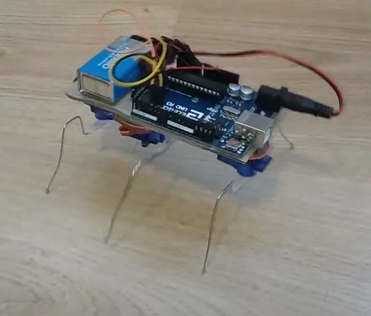

En este proyecto presentaremos el RobotInsecto en el que queremos simular un insecto con una apariencia tecnologica. Nuestro insecto tiene una apariencia parecida a la de una araña ya que tiene las patas finas ya que las hemos echo de alambre.
El RobotInsecto lo hemos configurado para que se mueve para delante con la pata de delante y la de atras y despues tiene la del medio que en vez de moverse para la izquierda y a la derecha sube y baja para darle mas estabilidad al robot.
 Diagrama del robot